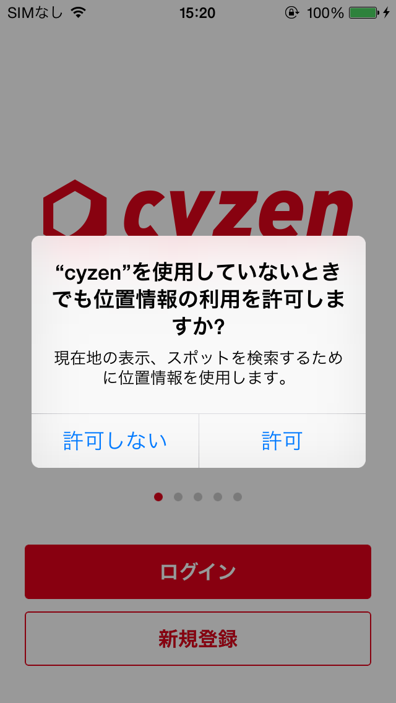

- 初回起動
「アプリのユーザーログイン」「スマホの設定」ができたら、準備完了です。
初回の起動のとき、「位置情報を取得しますが、よろしいですか？」など、いくつかの確認のダイアログボックスが表示されます。 すべて「許可」にしてください。

打刻
「交通費自動計算システムを使いはじめるときは、毎日、アプリの「交通費記録を開始」を押します。あとは何も操作はありません。アプリを携帯して移動するだけです。
1日の仕事が終わったら、「交通費記録を停止」を押します。このあとの移動は記録されません。
重要
「記録開始」を忘れないことも大事ですが、「記録停止」をすることも忘れないようにしましょう！